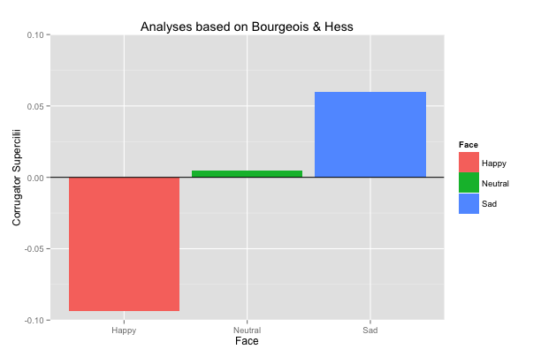

Wondra Dissertation:
EMG Pilot Results
Summary of Pilot Study

Subjects were told that they would participate in a study about emotion perception by guessing someone else's emotions from photos of her face. They were also told that the study used sensors that would measure their "physiological reactions" or "skin sweat" because prior research has found that the kind of physiological reactions we're monitoring has an impact on emotion perception.
Subjects had EMG sensors placed over the Corrugator Supercilii (eyebrow muscle involved in frowning) and Zygomaticus Major (cheek muscle involved in smiling). Then they completed the emotion perception task.
Next, subjects saw photos of a young woman with a happy face, neutral face, or sad face. They rated how good she felt and how bad she felt in each photo. For each trial, there was an 8-second resting period, then a 1-second fixation cross, and then the photo was displayed for 8 seconds.
I was interested in seeing whether participants would show evidence of mimicking the facial expressions they saw. If so, then they should have more Zygomaticus Major activity in response to happy faces than to the other faces, and more Corrugator Supercilii activity in response to sad faces than to the other faces.
Results of the Pilot Study
There is no standard way to analyze EMG data. Different labs do things completely differently. I tried to follow the analyses used in three different papers (with some slight variations). I show descriptive results without running hypothesis tests because our pilot sample is a bit small (N = 23).
Analyses Based on Dimberg, multiple papers
Dimberg typically uses the following method of data analysis:
- 1) Integrate the EMG data over 20-ms periods
- 2) Find the average muscle activity over 100-ms periods during the first second of stimulus exposure
- 3) Find the average muscle activity during the 1 second before stimulus onset to use as a baseline (in my study, this was during a fixation cross)
- 4) For each trial, subtract the baseline from each 100-ms period
The plots to the right show the average Zygomaticus Major and Corrugator Supercilii activity (difference from baseline) for each 100-ms period during the first second of exposure to happy, neutral, and sad faces.
As in past research, during the latter 500ms there is more Zygomaticus Major activity when subjects see happy faces than when they see sad faces and there is more Corrugator Supercilii activity when subjects see sad faces than when they see happy faces (NOTE: Most past research has not examined neutral faces).
Analyses Based on Moody et al., 2007
Moody et al., 2007 analyzed their in the following way:
- 1) Integrate the EMG data
- 2) Log10 transform the integrated EMG data
- 3) Standardize the log10-transformed EMG data by subject and muscle
- 2) Find the average muscle activity over 100-ms periods during the first second of stimulus exposure
- 3) Find the average muscle activity during the 500-ms period prior to the fixation cross as a baseline (NOTE: I did not do this for the sake of time; instead, I used activity during the fixation cross as a baseline)
- 4) For each trial, subtract the baseline from each 100-ms period
The plots to the right show the average Zygomaticus Major and Corrugator Supercilii activity (difference from baseline) for each 100-ms period during the first second of exposure to happy, neutral, and sad faces.
Once again, during the latter 500ms there is more Zygomaticus Major activity when subjects see happy faces than when they see sad faces and there is more Corrugator Supercilii activity when subjects see sad faces than when they see happy faces.
Analyses Based on Bourgeois & Hess, 2008

Bourgeios & Hess analyzed their data in the following way:
- 1) Integrate the EMG data
- 2) Standardize the EMG data by subject and muscle
- 2) Find the average muscle activity over the whole time that subjects see the faces
- 3) Directly compare the average muscle activity in response to different facial expressions (no baseline subtraction)
The plots to the right show the average Zygomaticus Major and Corrugator Supercilii activity (difference from baseline) over the entire period that subjects saw happy, neutral, and sad faces.
Although the Zygomaticus Major activity is greatest in response to happy faces, the difference between happy and sad faces is pretty small. In contrast, the Corrugator Supercilii activity show exactly the pattern I wanted to see—the most activity in response to sad faces, then neutral faces, then happy faces.
Conclusion
Based on three different methods of analyses, the overall picture seems to be that I can replicate what's been presented in past research by using the photos of my actress. I plan to start collecting data for the full dissertation study this week.